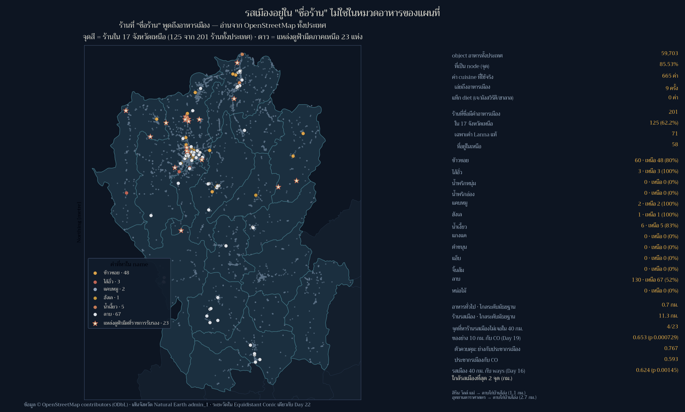
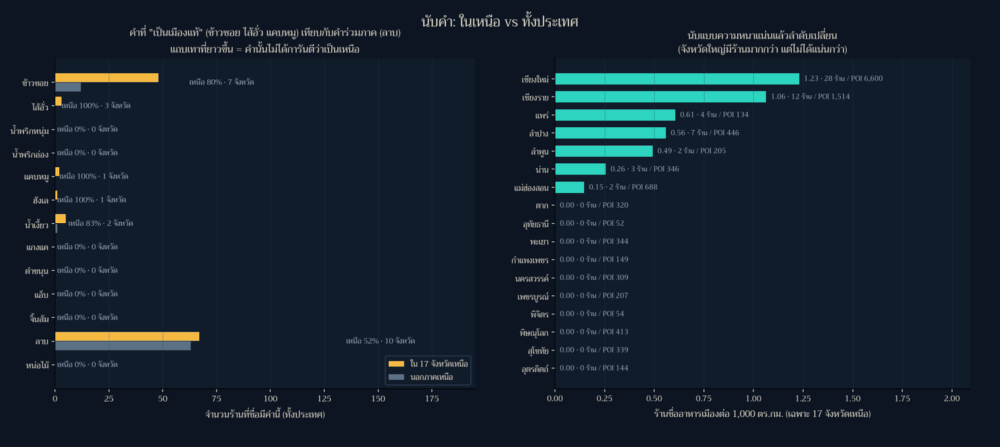
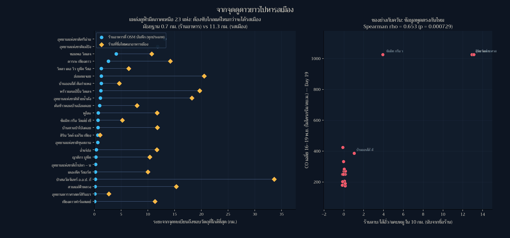

Day 23 · Senses: Taste — อาหารเหนือในแผนที่ไทย: OSM รู้จักข้าวซอย 60 ร้าน แต่ไม่รู้จักรสเลยสักครั้ง (และ 4 แหล่งดูฟ้ามืดที่หาร้านเมืองไม่เจอใน 40 กม.)

โจทย์ทางการวันนี้คือ “Food, drink or something else which you can taste.” (หัวข้อ Senses: Taste — ดึงข้อความมาจากหน้า 30daymapchallenge.com อ่านสด 20:55 น. ของวันที่ 23 พ.ย. เป็น senses วันที่สี่ของซีรีส์ต่อจาก Day 5 sight · Day 12 sound · Day 19 smell)
อาจารย์ขอธีมเป็น อาหารภาคเหนือ — ลาบ ข้าวซอย ผมเลยตั้งคำถามที่ตอบได้ด้วยข้อมูลจริงว่า
แผนที่ที่คนช่วยกันวาดทั้งใบนี้ “รู้รส” ขนาดไหน และมันอยู่ไกลจากจุดที่เราไปดูดาวยาวแค่ไหน
คำตอบสั้นคือ: OSM ไม่รู้รสเลย แต่ ชื่อร้าน รู้ — และชื่อร้านอยู่ที่เชียงใหม่กับเชียงรายเป็นหลัก
๐. ปัญหาแรก: “รส” ไม่มีที่อยู่ในหมวดหมู่ของ OSM
OSM มีแท็กสำหรับเรื่องนี้โดยตรงคือ cuisine (หมวด/ประเภทของอาหารที่ขาย) ผมสแกน Geofabrik Thailand extract ทั้งประเทศ (ไฟล์เดียวกับ Day 21–22, md5 db3958a037ce717c462101b86e2f75f3) แล้วเก็บทุก object ที่เข้าหมวด อาหาร/เครื่องดื่ม/ของกิน = 59,703 ชิ้น (node 51,062 · way 8,641 — 85.53% เป็นจุด)
ผลที่ได้คือ
| สิ่งที่ OSM บันทึกเรื่อง “รส” | ค่าที่วัดได้ |
|---|---|
ค่า cuisine ที่ใช้จริงทั้งประเทศ |
665 ค่า รวม 25,388 ครั้ง |
| ค่าที่ใช้บ่อย 5 อันดับแรก | thai 5,989 · coffee_shop 4,386 · burger 761 · pizza 744 · chicken 711 |
ครั้งที่ cuisine เอ่ยถึงอาหารเมือง (ข้าวซอย/ลาบ/ไส้อั่ว/แคบหมู/ฮังเล/น้ำเงี้ยว/Lanna/northern) |
9 ครั้ง |
ครั้งที่ cuisine เอ่ยถึง “อีสาน” (ไว้เทียบ) |
28 ครั้ง |
แท็ก diet (vegetarian / vegan / halal / kosher) |
0 ค่า — ไม่มีใครใช้เลย |
object ที่มี opening_hours |
11,028 ชิ้น |
ใน 9 ครั้งของการเอ่ยถึงอาหารเมืองนั้น ละเอียดขนาดนี้: cuisine=ข้าวซอย 1 ครั้ง, cuisine=ลาบ 4 ครั้ง, ลาบอีสาน 1, ลาบหมู 1, northern_thai 1, northern_thai_food 1 และ ไส้อั่ว / แคบหมู / ฮังเล / น้ำเงี้ยว / แกงแค / จิ้นส้ม = 0 ครั้ง
พูดให้โหดหน่อย: ถ้าเชื่อหมวดหมู่ของ OSM ประเทศไทยมีอาหารประเภท “thai” กับ “coffee” แต่ไม่มี “อาหารเหนือ” เป็นรสแยกต่างหาก และไม่มีข้อมูลมังสวิรัติแม้แต่น้อย (ซึ่งไม่ใช่เรื่องแปลก — cuisine ถูกกรอกตอนคน map สนใจจะจำแนก ไม่ใช่ตามตำราอาหาร)
ที่เหลือจึงมีที่เดียว: ป้ายชื่อร้าน

๑. อ่าน “รส” จากชื่อร้าน — และกับดักแรกของภาษาไทย
ผมค้นหา 13 คำในช่องชื่อของ object (รวม name, name:en, alt_name, official_name, sig, brand) แบ่งเป็น 11 คำเมือง + 2 คำควบคุม
รอบแรกได้ 380 คู่ (คำ×ร้าน) แต่เปิดดูแล้วรู้ว่า substring ในภาษาไทยคือกับดัก คำว่า “ลาบ” ชนกับ
- บ้านแม่สะลาบ · โรงเรียนวัดแม่สะลาบ (ชื่อหมู่บ้าน)
- 13. กุหลาบพันปี (ดอกไม้)
- บึงบอระเพ็ด … อุโมงค์ปลาบึก, ตลาดปลาบางแสน (ปลา + บ)
- บริษัท เลาบราเดอร์ส อินเตอร์ เนชั่นแนล ( Labrador!)
- ถนนบ้านฉาง–พลาบูรพาพัฒน์ (ชื่อถนน)
จึงใส่ negative lookbehind ห้ามตัวอักษร 9 ตัวนำหน้าคำว่า “ลาบ” ตามรายการใน tools/day23_lanna.py (บรรทัด WORD_RE["ลาบ"]) ผล: คู่คำ×ร้านลดจาก 380 เหลือ 231 · ตัดร้านทิ้ง 149 แห่ง · เหลือร้านที่ OSM ระบุว่าเป็นอาหารจริง (มี amenity/shop หมวดอาหาร หรือมี cuisine) 201 ร้าน
| คำ | ร้านทั้งประเทศ | ใน 17 จังหวัดเหนือ | สัดส่วนที่เป็นเหนือ | จังหวัดเหนือที่เจอ |
|---|---|---|---|---|
| ข้าวซอย | 60 | 48 | 80.00% | เชียงใหม่ 25 · เชียงราย 8 · ลำปาง 7 · น่าน 3 |
| ลาบ (คำควบคุม) | 130 | 67 | 51.54% | เชียงใหม่ 29 · เชียงราย 9 · ลำปาง 6 · นครสวรรค์ 6 |
| น้ำเงี้ยว | 6 | 5 | 83.33% | เชียงราย 3 · เชียงใหม่ 2 |
| ไส้อั่ว | 3 | 3 | 100.00% | แม่ฮ่องสอน 1 · เชียงใหม่ 1 · ลำพูน 1 |
| แคบหมู | 2 | 2 | 100.00% | เชียงราย 2 |
| ฮังเล | 1 | 1 | 100.00% | แพร่ 1 |
| น้ำพริกหนุ่ม · น้ำพริกอ่อง · แกงแค · ตำขนุน · แอ็บ · จิ้นส้ม · หน่อไม้ | 0 | 0 | — | — |
รวมแล้ว 125 จาก 201 ร้าน (62.19%) ตกอยู่ใน 17 จังหวัดภาคเหนือ (เนื้อที่ 171,810 ตร.กม. ตาม Natural Earth admin_1)
สามเรื่องที่ตารางนี้บอก — และสองเรื่องผมไม่คิดว่าจะเจอ
- ข้าวซอยเป็น “เครื่องหมายภูมิภาค” ที่ชัดจริง — 80.00% ของร้านที่ใช้ชื่อนี้อยู่ในเหนือ ที่เหลือนอกเหนือเป็นกรุงเทพฯ 6 แห่งกับขอนแก่น/ระยอง/จันทบุรีจังหวัดละ 1 ซึ่งสมเหตุสมผล (คนเหนือไปเปิดร้านต่างถิ่น)
- ลาบใช้บอก “เหนือ” ไม่ได้ — คำควบคุมทำงานตามหน้าที่: มีแค่ 51.54% ที่เป็นเหนือ และนอกเหนือนั้นไปกระจุกที่ ขอนแก่น 15 · กรุงเทพฯ 14 · ระยอง 8 · ชลบุรี 6 ซึ่งเป็นร้านลาบอีสาน ไม่ใช่ร้านลาบเมือง → ถ้าใครทำแผนที่ “อาหารเหนือ” ด้วยคำว่าลาบ จะได้แผนที่ที่ครึ่งหนึ่งไม่เกี่ยวกับภาคเหนือเลย
- อาหารเมืองที่คนกินจริงแทบไม่โผล่ในชื่อร้าน — น้ำพริกหนุ่ม แคบหมู แกงแค ตำขนุน แอ็บ จิ้นส้ม มี 0–2 ร้านทั้งประเทศ (มีเพียงแคบหมู 2 ฮังเล 1 ไส้อั่ว 3) เพราะของพวกนี้เป็น เมนู ไม่ใช่ ชื่อร้าน — คนเขียนป้ายว่า “ร้านอาหารตามสั่ง” หรือ “ก๋วยเตี๋ยวเรือ” แล้วขายไส้อั่วข้างกัน → OSM บันทึกสิ่งที่มองเห็นจากถนน ไม่ใช่สิ่งที่สั่งในเมนู และผมไม่มีทางแก้ข้อนี้ด้วยการหา keyword เพิ่ม
๒. นับแบบไหนก็ได้คำตอบไม่เหมือนกัน

จังหวัดเหนือ 7 จังหวัดมีร้านชื่ออาหารเมือง อีก 10 จังหวัดเป็น 0 (รวม 8 จังหวัด “เหนือล่าง” ตามนิยาม 17 จังหวัด: อุตรดิตถ์ พิจิตร พิษณุโลก สุโขทัย อุทัยธานี กำแพงเพชร นครสวรรค์ ตาก เพชรบูรณ์ และพะเยา)
| จังหวัด (Natural Earth) | object อาหารที่ OSM รู้จัก | ร้านชื่ออาหารเมือง | % ของร้านอาหารในจังหวัด | ต่อ 1,000 ตร.กม. |
|---|---|---|---|---|
| เชียงใหม่ | 6,600 | 28 | 0.424% | 1.230 |
| เชียงราย | 1,514 | 12 | 0.793% | 1.064 |
| ลำปาง | 446 | 7 | 1.570% | 0.559 |
| แพร่ | 134 | 4 | 2.985% | 0.606 |
| น่าน | 346 | 3 | 0.867% | 0.256 |
| แม่ฮ่องสอน | 688 | 2 | 0.291% | 0.147 |
| ลำพูน | 205 | 2 | 0.976% | 0.492 |
อ่านสามแบบได้สามคำตอบ: จำนวนจริง ชี้เชียงใหม่ · ต่อเนื้อที่ ชี้เชียงใหม่กับเชียงราย สูสีกัน (1.230 vs 1.064) · สัดส่วนต่อร้านอาหารที่ OSM รู้จัก ชี้ แพร่ (2.985%) กับ ลำปาง (1.570%) ซึ่งไม่ใช่จังหวัดที่คนนึกถึงก่อนเลย
และต้องบอกตรง ๆ ว่าแบบสุดท้ายอ่านยาก: ตัวส่วนคือ “ร้านอาหารที่ OSM map ไว้” ซึ่งขึ้นกับว่าจังหวัดนั้นมี mapper กี่คน (Day 16 เคยวัดไว้ว่าจำนวน way รอบแหล่งดูดาวย่าง ต่างกันตั้งแต่ 0 ถึง 589 ชิ้น) — ลำปางมี object อาหาร 446 ชิ้นเทียบกับเชียงใหม่ 6,600 จึงไม่ใช่หลักฐานว่า “ลำปางขายไส้อั่วมากกว่า” แต่คือหลักฐานว่า ลำปางถูก map น้อยกว่า
๓. จากจุดดูดาวยาวไปหารสเมือง

แหล่งดูฟ้ามืดในทะเบียนราชการที่อยู่ภาคเหนือมี 23 แห่ง (เชียงใหม่ 17 · น่าน 2 · เชียงราย 2 · ลำพูน 1 · แม่ฮ่องสอน 1 — นับจากคอลัมน์ province ของทะเบียน) วัดระยะจากจุดทะเบียนไปถึง ขอบวัตถุที่ใกล้ที่สุด ใน projection เดียวกับทั้งซีรีส์ (Day 22 ตรวจแล้วว่า projection นี้ทำให้พื้นที่คลาด −0.3617% ซึ่งจิ๊บจ๊อยเมื่อเทียบกับสิ่งที่เห็น)
| ระยะ (กม.) | |
|---|---|
| ร้านอาหารทั่วไป (ทุกประเภท) · มัธยฐานของ 23 จุด | 0.68 |
| ร้านที่ชื่อโฆษณาอาหารเมือง · มัธยฐาน | 11.34 |
| ค่าสูงสุดที่วัดได้ (ป่าสนวัดจันทร์ อ.อ.ป. กัลยาณิวัฒนา → ข้าวซอยพี่น้อง) | 33.63 |
| จุดที่ไม่พบร้านรสเมืองเลยในรัศมี 40 กม. | 4 จาก 23 |
ค่าต่ำสุด (min) ของระยะไปหาร้านรสเมือง: สิริน วิลล์ แม่ริม 1.08 กม. (ลาบไก่บ้านโอ่ง) และ อุทยานดาราศาสตร์สิรินธร 2.69 กม. (ลาบไก่บ้านโอ่ง — ร้านเดียวกันคิดเป็นระยะจากสองจุด) จุดที่มีร้านรสเมืองใน 10 กม. เยอะสุดคือ สิริน วิลล์ 29 ร้าน กับ อุทยานดาราศาสตร์สิรินธร 27 ร้าน
ส่วน 4 จุดที่หาไม่เจอ (ใน 40 กม.) คือ อุทยานแห่งชาติขุนสถาน (น่าน) · อุทยานแห่งชาติแม่ปิง (ลำพูน) · อุทยานแห่งชาติถ้ำปลา–น้ำตกผาเสื่อ (แม่ฮ่องสอน) · อุทยานแห่งชาติศรีน่าน (น่าน) ทั้งสี่เป็นอุทยานที่อยู่ห่างชุมชน และมีนัยตรง ๆ กับคนไปกางเต็นท์: ของกินต้องพกไปเอง (ซึ่ง Day 21 ก็เพิ่งพบว่ารอบ ๆ เขามี object ใน OSM น้อยมาก — ตรงกัน)
๔. ของย่างกับควัน: อย่าเพิ่งรีบสรุป
อาจารย์อยากได้ของย่าง (ลาบ · ไส้อั่ว · แคบหมู) ผมจึงทดสอบว่าจุดที่มี “ร้านของย่างในชื่อร้าน” สัมพันธ์กับค่าฝุ่น/ควันที่วัดไว้ Day 19 (CO และ PM2.5 เฉลี่ย 16–19 พ.ย. จาก CAMS) ไหม
| คู่ที่ทดสอบ (Spearman, n = 23 จุดภาคเหนือ) | rho | p-value |
|---|---|---|
| ร้านของย่างใน 10 กม. ↔︎ CO | 0.653 | 0.00073 |
| ร้านของย่างใน 10 กม. ↔︎ PM2.5 | 0.673 | 0.00043 |
| ตัวควบคุม: ร้านของย่าง ↔︎ ประชากรเมือง 30 กม. | 0.767 | 2.0e-05 |
| ตัวควบคุม: ประชากรเมือง ↔︎ CO | 0.593 | 0.0029 |
| ร้านรสเมืองใน 40 กม. ↔︎ จำนวน way รอบจุด (Day 16) | 0.624 | 0.0015 |
ลำดับนี้พูดอะไร: ตัวแปรร่วม (ขนาดของเมืองที่ตั้งอยู่ใกล้) สัมพันธ์กับ ทั้งสองฝั่ง มากกว่า ตัวมันเองเสียอีก — ร้านของย่างอยู่ใกล้เมืองใหญ่ และ CO ใน CAMS ก็สูงใกล้เมืองใหญ่ (จากจราจร/เผา/อุตสาหกรรม) ดังนั้นrho 0.653 ไม่ได้บอกว่า “กลิ่นลาบทำให้ CO สูง” มันบอกว่า “จุดที่ OSM รู้จักร้านของย่าง คือจุดที่อยู่ใกล้เมือง” ซึ่งเป็นคำตอบแบบเดียวกับ คอลัมน์ last ในตาราง (0.624 กับจำนวน way)
ถ้าจะยืนยันเรื่องควันจริง ต้องมีข้อมูลวันที่/เวลาปิ้งย่างหรือทะเบียนร้านอาหารที่ย่างถ่าน ไม่ใช่ชื่อร้านในแผนที่ — และนี่คือขอบเขตที่ข้อมูลชุดนี้ไปไม่ถึง
วิธีทำแบบย่อ
- สแกน PBF สองรอบด้วย
pyosmium(เหมือน Day 21):collect_day23_food.pyเอา object อาหาร + counters ของcuisine/dietทั้งประเทศ,collect_day23_dishes.pyเอา object ที่ ชื่อ ตรงคำอาหารเมือง (พร้อมเก็บ string ที่ใช้ค้นหาไว้ตรวจซ้ำ) - สร้าง geometry จริงของ way จาก node (ไม่ใช้ centroid แบบ Day 16) แล้ว reproject เป็น Equidistant Conic ครั้งเดียว
- จับจังหวัดด้วย
STRtree.query(pt, predicate="within")บน Natural Earth admin_1 (77 จังหวัด · นับพื้นที่ด้วย geodesic ตามวิธี Day 22) - กรอง false positive ของคำว่า “ลาบ” ด้วย negative lookbehind แล้วตรวจชื่อที่ตกค้างทุกแถว
- วัด 3 อย่างต่อคำ: จำนวนทั้งประเทศ · ส่วนที่อยู่ใน 17 จังหวัดเหนือ · ความหนาแน่น/สัดส่วน ต่อร้านอาหารที่ OSM รู้จักในจังหวัดนั้น
- วัดระยะจาก 23 จุดทะเบียนฟ้ามืดภาคเหนือไปหาร้านรสเมือง (รัศมี 40 กม. · วัดถึงขอบวัตถุ)
- ทดสอบสมมติฐาน “ของย่าง = ควัน” ด้วย Spearman พร้อมตัวควบคุม (ประชากรเมือง) เพื่อดูว่าความสัมพันธ์มาจากไหน
- assert: ผลรวมต่อคำต้อง ≥ จำนวนร้าน (ร้านหนึ่งมีได้หลายคำ) · สัดส่วน ≤ 100% · ทุกระยะที่รายงานต้องไม่เกินรัศมีที่ประกาศ · จำนวนจังหวัดต้อง 17 · และถ้าจะอ้างว่า “ไม่พบ” รัศมีค้นต้องกว้างพอ (40 กม.)
ข้อจำกัดที่ต้องบอกตรง ๆ
- นี่คือ “รสที่ OSM บันทึก” ไม่ใช่ “รสที่มีอยู่จริง” — ตลาดสดและรถเร่ขายน้ำพริกหนุ่ม แทบไม่ปรากฏใน OSM เลย การที่คำหนึ่งได้ 0 ครั้งจึงแปลว่า ไม่มีใคร map ไว้ ไม่ใช่ไม่มีของ
- การ match เป็น substring — ภาษาไทยไม่มีช่องคำ ผมตัดเฉพาะตัวหน้าที่ยืนยันได้ว่าพบบ่อยในข้อมูล ว่าทำให้เกิดคำผิด (กุหลาบ/สะลาบ/ปลาบึก/เลาบราเดอร์ส/พลาบูรพา) ซึ่งยังอาจมีกรณีอื่นเหลืออยู่ และในทางกลับกันก็อาจเผลอตัดชื่อที่สะกดแปลกออกไป (recall ลดลง) — ตรวจได้ทุกแถวใน
day23_lanna_places.geojson - จังหวัดมาจาก Natural Earth admin_1 ซึ่งเส้นขอบหยาบกว่าเขตราชการ ร้านที่ติดขอบ อาจถูกนับผิดจังหวัด (มี flag
edgeในไฟล์ geojson) - ตัวส่วน (จำนวนร้านอาหารในจังหวัด) ไม่เท่าเทียมกันเชิงคุณภาพ เพราะความหนาแน่นของ mapping ขึ้นกับจำนวน mapper (Day 16) ไม่ใช่จำนวนร้านจริง
- 17 จังหวัดเหนือ ใช้เกณฑ์ตามหน้า Wikipedia ของ Northern Thailand (9 จังหวัดกลุ่มบน บวก 8 จังหวัดกลุ่มล่าง) ซึ่งเป็นเขตการปกครอง ไม่ใช่เขตวัฒนธรรม Lanna — ในตาราง 10 จังหวัดมีร้านชื่ออาหารเมืองเป็น 0 (รวมถึง 8 จังหวัดกลุ่มล่างทั้งหมด) แต่บางจังหวัดในนั้นมีร้าน “ลาบ” (อุตรดิตถ์ 3 · พิจิตร 1) ซึ่งเป็นอาหารอีสาน ไม่ใช่ของเมือง และเนื้อที่จังหวัดที่ผมใช้คิดความหนาแน่นก็มาจาก Natural Earth เช่นกัน จึงใช้เทียบระหว่างจังหวัดได้ ไม่ใช่เทียบกับตัวเลขทางราชการ
- CO/PM2.5 จาก CAMS grid ~0.1° เฉลี่ย 96 ชม. (Day 19) — ละเอียดไม่พอเห็นควันจากเตาเดียว
- ข้อมูล snapshot เดียวกับ Day 21/22 (21 พ.ย. 2569) — ร้านเปิดใหม่หลังวันนั้นไม่มีในนี้
ไฟล์ประกอบ
- day23_lanna_map.png — แผนที่ 17 จังหวัดเหนือพร้อมร้านที่ชื่อมีคำอาหารเมือง
- แหล่งดูฟ้ามืด 23 จุด + สถิติหลัก
- day23_words.png — นับคำแบบในเหนือ vs ทั้งประเทศ และแบบต่อ 1,000 ตร.กม.
- day23_sites.png — ดัมเบลพล็อต 23 จุด: ระยะไปหาร้านอาหารทั่วไป เทียบกับร้านรสเมือง
- scatter ของร้านของย่างกับ CO พร้อมตัวควบคุม
- day23_words.csv — ต่อคำ: hits · in_north · สัดส่วน · จังหวัดอันดับต้น · ตัวอย่างชื่อ
- day23_provinces.csv — ต่อจังหวัดเหนือ 17 แห่ง: เนื้อที่ · object อาหาร · จำนวนร้านต่อคำ
- day23_sites_north.csv — ต่อจุดทะเบียน 23 แห่ง: ระยะใกล้สุดแต่ละคำ ฯลฯ
- day23_lanna_places.geojson — ทุกจุดที่ match (พร้อมคำที่เจอ/จังหวัด/ชื่อร้าน) ให้ตรวจเอง
- day23_stats.json — ตัวเลขทั้งหมด +
bug_found+confounder+false_positive_filter


โค้ด: tools/collect_day23_food.py · tools/collect_day23_dishes.py · tools/day23_lanna.py (รันบน Colab ได้ — cell แรกมี bootstrap ดึงรีโป + Natural Earth + ฟอนต์ Trirong และเทสต์บนเครื่องได้ด้วย DAY23_FORCE_COLAB=1)
บทเรียน
- แผนที่เก็บ “สิ่งที่มองเห็น” ไม่ใช่ “สิ่งที่ลิ้ม” — OSM บันทึกป้ายร้านได้ดีมาก แต่บันทึกเมนูได้น้อยจนแทบเป็นศูนย์ (665 ค่า
cuisineมีอาหารเมือง 9 ครั้ง,diet0 ครั้ง) งานวิเคราะห์ที่ถามเรื่อง “รส” จึงต้องเริ่มจากการยอมรับว่าเรากำลังวัด ป้าย ไม่ใช่อาหาร - คำที่คิดว่าเป็นเอกลักษณ์ภูมิภาค อาจเป็นแค่คำที่ใช้กันทั้งประเทศ — ลาบ 130 ร้าน มีเพียง 51.54% ในเหนือ ที่เหลือคือขอนแก่น/กรุงเทพฯ/ระยอง (ลาบอีสาน) การใส่ คำควบคุม ลงไปในชุดคำค้นตั้งแต่แรก คือสิ่งที่ทำให้ข้อสรุปไม่เพี้ยน
- ภาษาไทยไม่มีช่องคำ → substring คือกับดักประจำภาษา — “ลาบ” ฝังอยู่ใน กุหลาบ สะลาบ ปลาบึก เลาบราเดอร์ส พลาบูรพา ผมตรวจเห็นจากตัวอย่างชื่อ (149 แห่งถูกตัดทิ้ง) ไม่ใช่จากสมมติฐาน และนี่คือเหตุผลที่ artifact ต้องมีตัวอย่างชื่อแนบไปด้วยเสมอ
- ตัวเลข 0 หลายตัวเป็นข้อมูล ไม่ใช่ช่องว่าง — “น้ำพริกหนุ่ม = 0 ร้าน” คือคำบอกเล่า เรื่องวิธีตั้งชื่อร้านของคนเหนือ (ขายหลายอย่าง ไม่เอาชื่อน้ำพริกมาทำป้าย) ซึ่งมีประโยชน์กับการตีความมากกว่าการไปหา dataset อื่นมาเสริม
- ความสัมพันธ์ต้องมียาแก้ คือตัวควบคุม — rho 0.653 กับร้านของย่างฟังดูมีเรื่องเล่า แต่พอใส่ประชากรเมืองเข้าไป (0.767 / 0.593) เรื่องราวกลายเป็น “จุดที่อยู่ใกล้เมือง มีข้อมูล map มากกว่า” ซึ่งตรงกับ Day 16 และ Day 21 — สามวันสามวิธีเจอกำแพงเดียวกัน
- ของแถมจากการตรวจตาราง: 4 แหล่งดูฟ้ามืดที่หาของกินไม่เจอ คือข้อสรุปที่เอาไปใช้จริงได้ (ขุนสถาน · แม่ปิง · ถ้ำปลา–ผาเสื่อ · ศรีน่าน) และนี่คือครั้งแรกในซีรีส์ที่ คำตอบของแผนที่กลายเป็นคำแนะนำว่า “พกข้าวไปเอง”